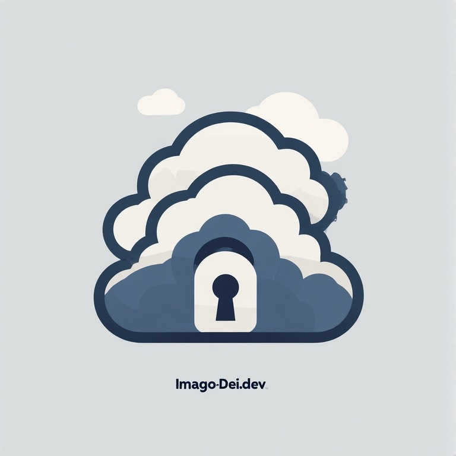

Cybersecurity Professional
Imago Dei Technologies is my personal portfolio, showcasing hands-on experience in security operations, vulnerability management, cloud security, and DoD compliance frameworks. My work demonstrates practical application of concepts from Security+, CySA+, and the Google Cybersecurity Certificate.
Current Focus
I'm actively building hands-on projects that demonstrate the skills employers look for in cybersecurity, assurance, and security operations roles. My current projects focus on:
- SIEM deployment and security monitoring
- Vulnerability assessment with ACAS/Nessus
- AWS IAM security best practices
- RMF control mapping and eMASS workflows
- STIG compliance and hardening
These competencies map directly to roles such as ISSO, SOC Analyst, Cyber Assurance Analyst, and Security Control Assessor in the DoD/defense contracting space.
Professional Direction
I'm building toward expertise in DoD-relevant security frameworks including the Risk Management Framework (RMF), STIG compliance, and continuous monitoring. My current projects in vulnerability assessment (ACAS), security monitoring, and cloud security are the foundation for that work. I'm also gaining exposure to eMASS and DoD Cloud SRG requirements to align with Huntsville's defense contracting market.
I'm also actively exploring how AI tools can augment security workflows—using LLMs to accelerate analysis, summarize findings, and assist with documentation, while learning to identify where AI output needs human verification.
Current Projects
Security Monitoring & SIEM Lab
SIEM deployment, log collection, custom alert creation, and incident response simulation.
Tools: Wazuh/Splunk, Ubuntu, Windows VM
Cert Alignment: CySA+, Google Certificate
Status: IN PROGRESS
View Project →ACAS/Nessus Vulnerability Assessment
Vulnerability scanning with Nessus, CVSS analysis, risk prioritization, and remediation validation. Simulates ACAS workflows for DoD environments.
Tools: Nessus Essentials, Metasploitable, Windows VM
Cert Alignment: CySA+, Security+
Status: IN PROGRESS
View Project →AWS IAM Security Assessment
IAM best practices: MFA enforcement, least privilege policies, audit logging, and credential analysis.
Tools: AWS Console, IAM, CloudTrail
Cert Alignment: AWS Cloud Practitioner, Security+
Status: IN PROGRESS
View Project →Next Phase: Advanced DoD & Cloud Security
I'm currently pursuing the AWS Solutions Architect – Associate (SAA-C03) certification. After completion, I will begin advanced projects in:
- eMASS control simulation and POA&M management
- STIG hardening and checklist generation
- DoD Cloud SRG compliance mapping
- AWS IAM hardening and automation
- Terraform infrastructure as code
Clearance Status
Eligible and willing to obtain Secret clearance
Clean background, no disqualifying factors
Prepared to undergo sponsorship process
Brand Identity
Imago Dei — “in the image of God” — reflects my belief that technology should be built with integrity, purpose, and respect for human dignity. This foundation shapes my approach to security: protecting systems ultimately protects people.
